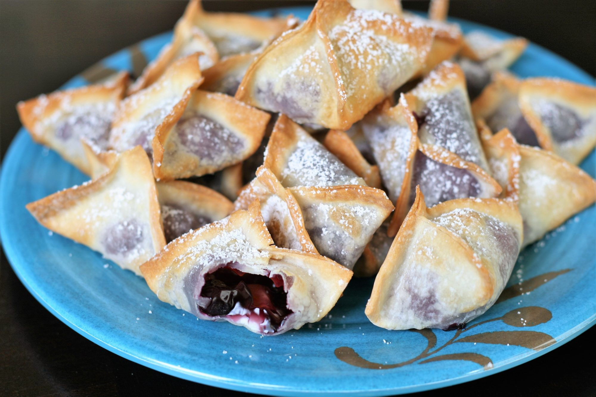

Ingredients
- ½ (8 ounce) package cream cheese
- 48 wonton wrappers
- 1 cup blueberry pie filling
- water as needed
- cooking spray
- ¼ cup powdered sugar
- Cut 4 ounce block of cream cheese in half, then in half again to create 4 pieces. Further cut each piece in half again so you have 8 equal pieces total. Set aside.
- Working with 6 wonton wrappers at a time, separate them out onto a clean work surface. Divide one of the cream cheese pieces into 6 pieces and place a piece in the middle of each wonton wrapper. Place 1 teaspoon of blueberry pie filling over the top of the cream cheese. Do not overfill, as the mixture may ooze out.
- Use your finger to lightly wet the 4 edges of each wonton wrapper. Gently fold in half diagonally to make a triangle, then bring up the remaining two corners so all corners join together. Try not to leave excess air in the wonton, which can cause them to burst. Press seams together to ensure a tight seal. Set wontons aside, covered in a damp paper towel, while you finish making the remaining wontons.
- Preheat the air fryer to 325 degrees F (160 degrees C). Spray the inner basket with cooking spray and place as many wontons in basket as will fit, without overcrowding. Lightly mist wontons with cooking spray.
- Air-fry for 5 minutes. Remove to a cooling rack and dust with powdered sugar. Let cool while you cook the remaining wontons in batches. Best served slightly warm or at room temperature.